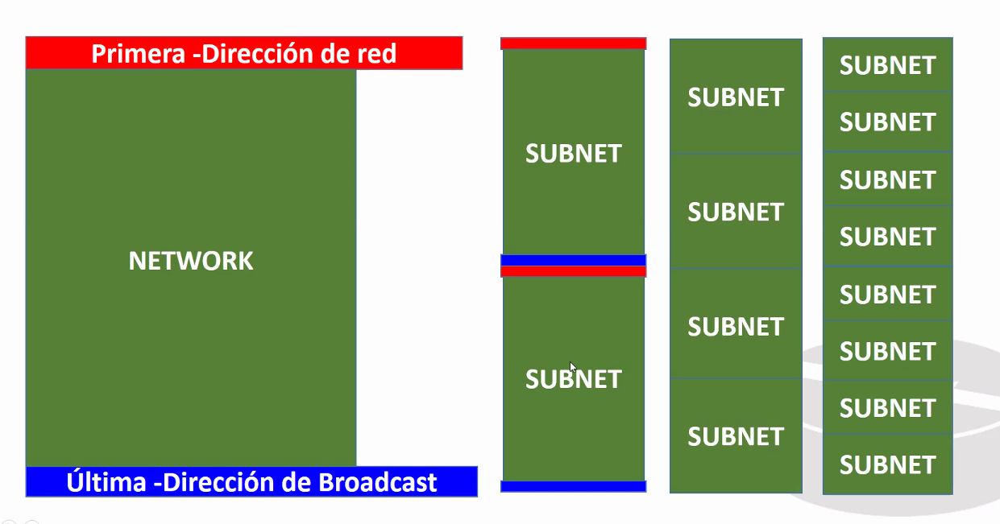

De las 254 direcciones en las subredes son 126 por que cada ramificacion implica una nueva direccion de broadcast.
¿Que le pasa a la direccion de broadcasr y direccion de red original?
La primer y la ultima subred no sepueden utilizar.

Pierdes direcciones.
Actualmente, si tienes sistemas operativos viejos esto aplica. Solo aplica con sistemas operativos nuevos.